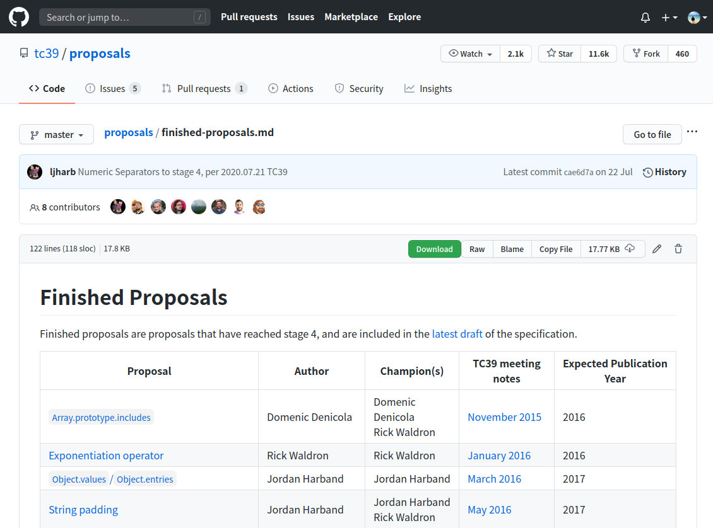
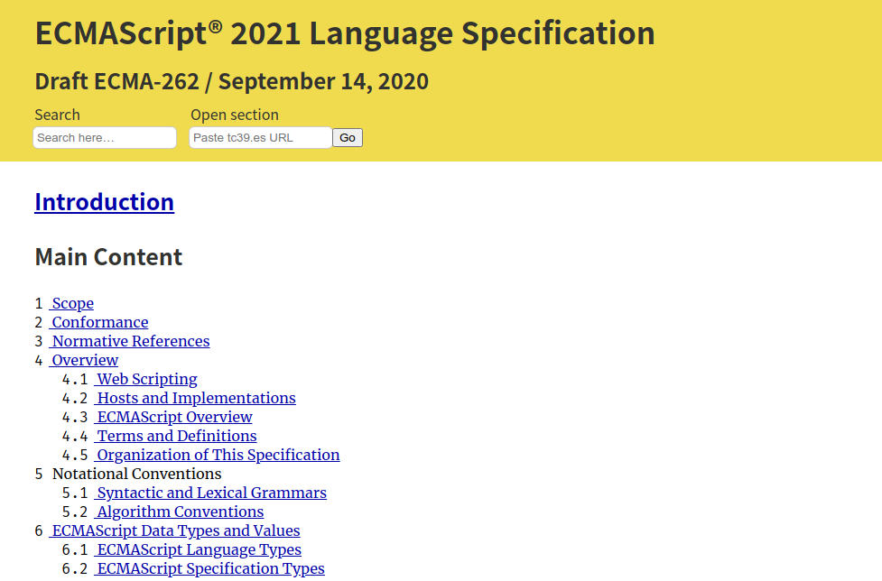
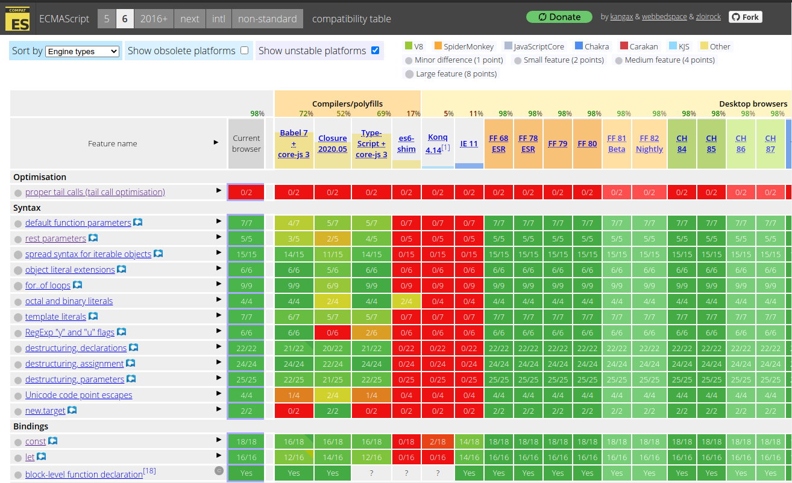
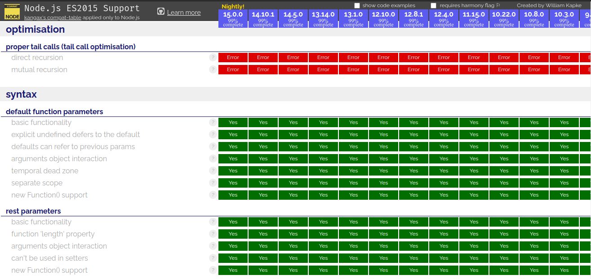

<!DOCTYPE html><html><head><meta charset="utf-8"><title>JavaScript 之旅 (1)：介紹 ECMA、ECMAScript、JavaScript 和 TC39 | Titangene Blog</title><meta http-equiv="X-UA-Compatible" content="IE=edge"><meta name="viewport" content="width=device-width,initial-scale=1,maximum-scale=1"><meta name="HandheldFriendly" content="True"><meta name="apple-mobile-web-app-capable" content="yes"><meta name="author" content="Titangene"><link rel="shortcut icon" href="/favicon.ico"><link rel="alternate" href="/atom.xml" title="Titangene Blog"><meta name="description" content="你很常聽到 ES6、ES7、ES2017 等這些名稱嗎？有聽過 ECMA 和 TC39 嗎？ECMAScript 和 JavaScript 又是什麼？規範要去哪裡看？下面會各別介紹。"><meta property="og:type" content="article"><meta property="og:title" content="JavaScript 之旅 (1)：介紹 ECMA、ECMAScript、JavaScript 和 TC39"><meta property="og:url" content="https://titangene.github.io/article/javascript-ecmascript-tc39.html"><meta property="og:site_name" content="Titangene Blog"><meta property="og:description" content="你很常聽到 ES6、ES7、ES2017 等這些名稱嗎？有聽過 ECMA 和 TC39 嗎？ECMAScript 和 JavaScript 又是什麼？規範要去哪裡看？下面會各別介紹。"><meta property="og:locale" content="zh_TW"><meta property="og:image" content="https://titangene.github.io/images/cover/javascript.jpg"><meta property="article:published_time" content="2020-09-16T03:18:30.000Z"><meta property="article:modified_time" content="2020-09-20T12:25:45.530Z"><meta property="article:author" content="Titangene"><meta property="article:tag" content="IT 鐵人賽"><meta property="article:tag" content="ECMAScript"><meta name="twitter:card" content="summary_large_image"><meta name="twitter:image" content="https://titangene.github.io/images/cover/javascript.jpg"><meta name="twitter:creator" content="@titangeneTW"><meta name="twitter:site" content="@titangene_blog"><meta property="fb:admins" content="100001106016019"><meta property="fb:app_id" content="2470546159839111"><meta property="og:image:width" content="1200"><meta property="og:image:height" content="630"><meta name="google-site-verification" content="AaJ39L7h-nWwJjXJMhAMtXSF6H6BUgGWXC80kYvLic8"><link href="https://fonts.googleapis.com/css2?family=Roboto&display=swap" rel="stylesheet"><link href="https://fonts.googleapis.com/css?family=Source+Code+Pro&display=swap" rel="stylesheet"><link rel="stylesheet" href="https://cdnjs.cloudflare.com/ajax/libs/font-awesome/5.13.0/css/all.min.css"><link rel="stylesheet" href="https://unpkg.com/gitalk/dist/gitalk.css"><link rel="stylesheet" href="/style.css"><script async src="https://www.googletagmanager.com/gtag/js?id=G-KX04S5LSX1"></script><script>!function(a){function n(){dataLayer.push(arguments)}a.dataLayer=a.dataLayer||[],n("js",new Date),n("config","G-KX04S5LSX1")}(window)</script><script>function setLoadingBarProgress(e){document.getElementById("loading-bar").style.width=e+"%"}</script><meta name="generator" content="Hexo 4.2.0"><link rel="alternate" href="/atom.xml" title="Titangene Blog" type="application/atom+xml"></head></html><body><div id="loading-bar-wrapper"><div id="loading-bar"></div></div><script>setLoadingBarProgress(20)</script><header class="l_header"><div class="wrapper"><div class="nav-main container container--flex"><a class="logo flat-box" href="/">Titangene Blog</a><div class="menu"><ul class="h-list"><li><a class="flat-box nav-home" href="/">Home</a></li><li><a class="flat-box nav-archives" href="/archives">Archives</a></li></ul><div class="underline"></div></div><div class="m_search"><form name="searchform" class="form u-search-form"><input type="text" class="input u-search-input" placeholder="Search"> <i class="fas fa-search"></i></form></div><ul class="switcher h-list"><li class="s-search"><a class="fas fa-search" href="javascript:void(0)"></a></li><li class="s-menu"><a class="fas fa-bars" href="javascript:void(0)"></a></li></ul></div><div class="nav-sub container container--flex"><a class="logo flat-box" href="/">Titangene Blog</a><ul class="switcher h-list"><li class="s-comment"><a class="far fa-comment-alt" href="javascript:void(0)"></a></li><li class="s-top"><a class="fas fa-arrow-up" href="javascript:void(0)"></a></li><li class="s-toc"><a class="fas fa-list-ol" href="javascript:void(0)"></a></li></ul></div></div></header><aside class="menu-phone"><nav><a href="/" class="nav-home nav">Home </a><a href="/archives" class="nav-archives nav">Archives</a></nav></aside><script>setLoadingBarProgress(40)</script><div class="l_body"><div class="container clearfix"><div class="l_main"><article id="post-javascript-ecmascript-tc39" class="post white-box article-type-post" itemscope itemprop="blogPost"><section class="meta"><h2 class="title"><a href="/article/javascript-ecmascript-tc39.html">JavaScript 之旅 (1)：介紹 ECMA、ECMAScript、JavaScript 和 TC39</a></h2><span class="post-time"><span class="post-meta-item-icon"><i class="fa fa-calendar"></i> </span><span class="post-meta-item-text">發表於</span> <time title="建立時間：2020-09-16 11:18:30" itemprop="dateCreated datePublished" datetime="2020-09-16T11:18:30+08:00">2020-09-16 </time><span class="post-meta-divider">|</span> <span class="post-meta-item-icon"><i class="fa fa-calendar-check"></i> </span><span class="post-meta-item-text">更新於</span> <time title="修改時間：2020-09-20 20:25:45" itemprop="dateModified" datetime="2020-09-20T20:25:45+08:00">2020-09-20</time></span> <span class="comments-count"><span class="post-meta-divider">|</span> <span class="post-meta-item-icon"><i class="fas fa-comment"></i> </span><a href="https://titangene.github.io/article/javascript-ecmascript-tc39.html#comments" class="article-comment-count">留言</a></span><div class="post-category"><span class="post-meta-item-icon"><i class="fa fa-folder"></i> </span><span class="post-meta-item-text">分類於</span> <span itemprop="about" itemscope itemtype="http://schema.org/Thing"><a href="/categories/javascript/" itemprop="url" rel="index"><span itemprop="name">JavaScript</span></a></span></div></section><section class="toc-wrapper"><h3>目錄</h3><ol class="toc"><li class="toc-item toc-level-1"><a class="toc-link" href="#ECMA"><span class="toc-text">ECMA</span></a></li><li class="toc-item toc-level-1"><a class="toc-link" href="#ECMAScript-ECMA-262"><span class="toc-text">ECMAScript &amp; ECMA-262</span></a></li><li class="toc-item toc-level-1"><a class="toc-link" href="#ECMAScript-JavaScript"><span class="toc-text">ECMAScript &amp; JavaScript</span></a></li><li class="toc-item toc-level-1"><a class="toc-link" href="#TC39"><span class="toc-text">TC39</span></a></li><li class="toc-item toc-level-1"><a class="toc-link" href="#TC39-的提案流程"><span class="toc-text">TC39 的提案流程</span></a></li><li class="toc-item toc-level-1"><a class="toc-link" href="#ECMAScript-提案"><span class="toc-text">ECMAScript 提案</span></a></li><li class="toc-item toc-level-1"><a class="toc-link" href="#ECMAScript-Spec"><span class="toc-text">ECMAScript Spec</span></a></li><li class="toc-item toc-level-1"><a class="toc-link" href="#瀏覽器-Node-js-的支援程度"><span class="toc-text">瀏覽器 &amp; Node.js 的支援程度</span></a></li><li class="toc-item toc-level-1"><a class="toc-link" href="#資料來源"><span class="toc-text">資料來源</span></a></li></ol></section><section class="article typo"><div class="article-entry" itemprop="articleBody"><p></p><p>你很常聽到 ES6、ES7、ES2017 等這些名稱嗎？有聽過 ECMA 和 TC39 嗎？ECMAScript 和 JavaScript 又是什麼？規範要去哪裡看？下面會各別介紹。</p><a id="more"></a><blockquote><p>本文同步發表於 iT 邦幫忙：<a href="https://ithelp.ithome.com.tw/articles/10237660" target="_blank" rel="noopener">JavaScript 之旅 (1)：介紹 ECMA、ECMAScript、JavaScript 和 TC39</a></p><p>「JavaScript 之旅」系列文章發文於：</p><ul><li><a href="https://ithelp.ithome.com.tw/users/20117586/ironman/3607" target="_blank" rel="noopener">iT 邦幫忙</a></li><li><a href="https://titangene.github.io/tags/it-%E9%90%B5%E4%BA%BA%E8%B3%BD/">Titangene Blog</a></li></ul></blockquote><h1 id="ECMA"><a class="header-anchor" href="#ECMA"></a>ECMA</h1><p>ECMA 是 European Computer Manufacturers Association (歐洲電腦製造商協會) 的簡稱，協會在 1961 年正式成立，是資訊和通訊系統的標準組織。</p><p>後來為了因應國際化，在 1994 年將名稱改為 Ecma International (Ecma 國際)。</p><p>Ecma 國際負責的標準包括：</p><ul><li><a href="http://www.ecma-international.org/publications/standards/Ecma-119.htm" target="_blank" rel="noopener">ECMA-119：CD-ROM 格式</a></li><li><a href="http://www.ecma-international.org/publications/standards/Ecma-334.htm" target="_blank" rel="noopener">ECMA-334：C# 語言規範</a></li><li><a href="http://www.ecma-international.org/publications/standards/Ecma-408.htm" target="_blank" rel="noopener">ECMA-408：Dart 語言規範</a></li><li><a href="http://www.ecma-international.org/publications/standards/Ecma-404.htm" target="_blank" rel="noopener">ECMA-404：JSON</a></li><li><a href="http://www.ecma-international.org/publications/standards/Ecma-262.htm" target="_blank" rel="noopener">ECMA-262：ECMAScript 語言規範</a></li><li>… 等</li></ul><blockquote><p>想知道 Ecma 國際負責哪些標準可參閱：<a href="http://www.ecma-international.org/publications/standards/Standard.htm" target="_blank" rel="noopener">Ecma Standards - list</a></p></blockquote><blockquote><p>更多有關 ECMA 的歷史可參閱 <a href="https://www.ecma-international.org/memento/history.htm" target="_blank" rel="noopener">History of Ecma</a>。</p></blockquote><h1 id="ECMAScript-ECMA-262"><a class="header-anchor" href="#ECMAScript-ECMA-262"></a>ECMAScript &amp; ECMA-262</h1><p>ECMAScript 簡稱 ES，是一種通用的程式語言，由 Ecma 國際在 ECMA-262 進行標準化。ECMA-262 的第一版在 1997 年由 Ecma General Assembly 出版的。</p><p>ECMAScript 是由 Netscape 的 Brendan Eich 發明的，最早出現在 Netscape 的 Navigator 2.0 瀏覽器中。從 IE 3.0 開始，很多瀏覽器開始使用 ECMAScript。</p><p>ECMAScript 是 JavaScript 的標準，目的是讓不同瀏覽器之間能根據 spec 來實作。當 ECMAScript 發布第三版 (即 ES3) 之後，成為當時所有瀏覽器支援的程式語言。</p><p>以前只能在瀏覽器中使用 ECMAScript，後來也能在 Node.js 寫 server 應用和 service。</p><h1 id="ECMAScript-JavaScript"><a class="header-anchor" href="#ECMAScript-JavaScript"></a>ECMAScript &amp; JavaScript</h1><p>JavaScript 和 ECMAScript 都是程式語言，但不是一樣的東西。JavaScript 通常縮寫為 JS，是一種符合 ECMAScript spec 的程式語言。</p><p>ECMA-262 是 ECMAScript 的規範，而 JavaScript 只是其中一種實作和擴充的程式語言 (雖然 JavaScript 相容於 ECMAScript，但 JavaScript 還提供 ECMAScript 未定義的特性)。</p><p>而我們常聽到的 ES6，代表的是 ECMA-262 第 6 版 (ECMA-262 6th Edition)。</p><p>從 ES7 (ES2016) 開始，ECMAScript 會在每年釋出新版本，裡面包含已完成的新特性，而瀏覽器就會根據新特性來完成實作，開發者就能開始使用這些新特性。</p><h1 id="TC39"><a class="header-anchor" href="#TC39"></a>TC39</h1><p>Ecma 標準是由各種技術委員會管理的，而 TC39 就是其中一個 TC，是 Technical Committee (技術委員會) 的縮寫，TC 會處理特定的領域或主題。</p><p>TC39 主要負責將通用、跨平台與 vendor 無關的程式語言 ECMAScript 標準化，包括語言的 syntax、semantics 和 library 以及支援該語言的補充技術。</p><blockquote><p>詳情可參閱 <a href="https://www.ecma-international.org/memento/tc39.htm" target="_blank" rel="noopener">TC39 - ECMAScript</a>。</p></blockquote><blockquote><p>其實還有其他的 TC，詳情可參閱 <a href="https://www.ecma-international.org/memento/TCs&amp;TGs.htm" target="_blank" rel="noopener">Ecma Technical Committees and Task Groups</a>。</p></blockquote><h1 id="TC39-的提案流程"><a class="header-anchor" href="#TC39-的提案流程"></a>TC39 的提案流程</h1><p>Ecma TC39 委員會負責發展 ECMAScript 程式語言並撰寫 spec，要對 spec 進行修改的階段如下：</p><ul><li>stage 0 (Strawperson)：沒有作為正式提案提交的任何討論、想法，或是修改或新增提案都是此階段</li><li>stage 1 (Proposal)：補充理由、描述解決方案、用法的說明範例、提出潛在的 challenges、討論關鍵演算法、abstractions 和 semantics，在這個階段就會有 polyfill 或 demo</li><li>stage 2 (Draft)：用 spec 的方式來精確描述 syntax 和 semantics，此階段會有實驗性的實作</li><li>stage 3 (Candidate)：已完成 spec 的內容，需要大量使用者的使用和反饋才能進入 stage 4，但實作已經符合 spec 了</li><li>stage 4 (Finished)：已準備將提案加入正式的 ECMAScript 標準中，但需兩個相容的實作 (瀏覽器或 Node.js 等環境) 通過驗收測試。此階段的實作已穩定</li></ul><p>所以 stage 0 是想法階段，而 stage 1 至 3 都是在進行審查和討論，從 stage 2 開始會有接近正式 spec 的內容，最後的 stage 4 才是正式將提案納入 spec 中。</p><p>有些提案還沒到 stage 4 就能在瀏覽器使用了，而且也有對應的 polyfill 可以使用。</p><blockquote><p>TC39 的提案流程詳情可參閱 <a href="https://tc39.es/process-document/" target="_blank" rel="noopener">The TC39 Process</a>。</p></blockquote><h1 id="ECMAScript-提案"><a class="header-anchor" href="#ECMAScript-提案"></a>ECMAScript 提案</h1><p>各提案在哪個 stage，或是被放棄、撤回或拒絕的提案都可在 <a href="https://github.com/tc39/proposals/" target="_blank" rel="noopener">tc39/proposals: Tracking ECMAScript Proposals</a> 這裡找到。</p><p>若只想查看已完成的提案，可直接看 <a href="https://github.com/tc39/proposals/blob/master/finished-proposals.md" target="_blank" rel="noopener">Finished Proposals</a> 這份文件，這裡有從 ES2016 開始到最新的所有 Finished Proposals。</p><p></p><h1 id="ECMAScript-Spec"><a class="header-anchor" href="#ECMAScript-Spec"></a>ECMAScript Spec</h1><p>若要看 ECMAScript spec 主要有兩個地方：</p><ul><li>最新版、最準確的 spec，包含最新年度 snapshot 的內容以及所有已完成的提案 (即 stage 4 的提案)：<a href="http://www.ecma-international.org/ecma-262/" target="_blank" rel="noopener">http://www.ecma-international.org/ecma-262/</a></li><li>過去發佈的 spec 版本：<a href="http://www.ecma-international.org/publications/standards/Ecma-262-arch.htm" target="_blank" rel="noopener">Standard ECMA-262-archive</a>，例如：<ul><li><a href="http://www.ecma-international.org/ecma-262/5.1" target="_blank" rel="noopener">ECMAScript Language Specification - ECMA-262 Edition 5.1</a></li><li><a href="http://www.ecma-international.org/ecma-262/6.0" target="_blank" rel="noopener">ECMAScript 2015 Language Specification - ECMA-262 6th Edition</a></li><li><a href="http://www.ecma-international.org/ecma-262/7.0" target="_blank" rel="noopener">ECMAScript 2016 Language Specification - ECMA-262 7th Edition</a></li><li><a href="http://www.ecma-international.org/ecma-262/8.0" target="_blank" rel="noopener">ECMAScript 2017 Language Specification - ECMA-262 8th Edition</a></li><li><a href="http://www.ecma-international.org/ecma-262/9.0" target="_blank" rel="noopener">ECMAScript 2018 Language Specification - ECMA-262 9th Edition</a></li><li><a href="http://www.ecma-international.org/ecma-262/10.0" target="_blank" rel="noopener">ECMAScript 2019 Language Specification - ECMA-262 10th Edition</a></li></ul></li><li>包含 ECMA-262 當前草案的 spec：<a href="https://tc39.es/ecma262/" target="_blank" rel="noopener">https://tc39.es/ecma262/</a></li></ul><p>我個人常看的是<a href="https://tc39.es/ecma262/" target="_blank" rel="noopener">草案</a>那份，若想看某個功能的定義，也可以看看在各版本的 spec 中是如何定義的。</p><p>但 ECMA-262 的文件有一個缺點：沒有像 <a href="https://html.spec.whatwg.org/multipage/" target="_blank" rel="noopener">HTML Standard</a> 和 <a href="https://www.w3.org/TR/CSS22/" target="_blank" rel="noopener">CSS 2.2 Spec</a> 一樣提供分頁功能啊…，每次開 spec 都會卡一下 (找一個換電腦的理由 XD)。為了解決這個問題，我另外找了 <a href="https://read262.netlify.app/" target="_blank" rel="noopener">https://read262.netlify.app/</a> 這個網頁，它把<a href="https://tc39.es/ecma262/" target="_blank" rel="noopener">草案</a>那份的內容即時更新成分頁版的 spec，而且還提供目錄和好用的搜尋功能！</p><p></p><h1 id="瀏覽器-Node-js-的支援程度"><a class="header-anchor" href="#瀏覽器-Node-js-的支援程度"></a>瀏覽器 &amp; Node.js 的支援程度</h1><p>可參閱 <a href="https://kangax.github.io/compat-table/es6/" target="_blank" rel="noopener">ECMAScript 6 compatibility table</a> 和 <a href="https://node.green/" target="_blank" rel="noopener">Node.js ES2015/ES6, ES2016 and ES2017 support</a> 這兩個頁面的表格，列出各版本對各特性支援的程度：</p><p></p><p></p><h1 id="資料來源"><a class="header-anchor" href="#資料來源"></a>資料來源</h1><ul><li><a href="https://en.wikipedia.org/wiki/Ecma_International" target="_blank" rel="noopener">Ecma International - Wikipedia</a></li><li><a href="http://www.ecma-international.org/publications/standards/Standard.htm" target="_blank" rel="noopener">Ecma Standards - list</a></li><li><a href="https://www.ecma-international.org/memento/history.htm" target="_blank" rel="noopener">History of Ecma</a></li><li><a href="https://www.ecma-international.org/memento/tc39.htm" target="_blank" rel="noopener">TC39 - ECMAScript</a></li><li><a href="https://tc39.es/process-document/" target="_blank" rel="noopener">The TC39 Process</a></li><li><a href="http://www.ecma-international.org/ecma-262/#sec-intro" target="_blank" rel="noopener">Introduction | ECMAScript 2020 Language Specification</a></li></ul></div><div class="article-tags tags"><a href="/tags/it-%E9%90%B5%E4%BA%BA%E8%B3%BD/" title="IT 鐵人賽">IT 鐵人賽</a> <a href="/tags/ecmascript/" title="ECMAScript">ECMAScript</a></div></section><div class="article-share-links"><span>分享：</span> <a class="fab fa-facebook-f" title="Facebook" target="_blank" href="https://www.facebook.com/sharer.php?u=https%3A%2F%2Ftitangene.github.io%2Farticle%2Fjavascript-ecmascript-tc39.html"></a> <a class="fab fa-twitter" title="Twitter" target="_blank" href="https://twitter.com/share?url=https%3A%2F%2Ftitangene.github.io%2Farticle%2Fjavascript-ecmascript-tc39.html&amp;text=JavaScript 之旅 (1)：介紹 ECMA、ECMAScript、JavaScript 和 TC39&amp;hashtags=IT鐵人賽,ECMAScript&amp;via=titangene_blog"></a> <a class="fab fa-linkedin-in" title="Linkedin" target="_blank" href="https://www.linkedin.com/sharing/share-offsite/?url=https%3A%2F%2Ftitangene.github.io%2Farticle%2Fjavascript-ecmascript-tc39.html"></a> <a class="fab fa-facebook-messenger" title="Facebook Messenger" target="_blank" href="http://www.facebook.com/dialog/send?app_id=2470546159839111&amp;link=https%3A%2F%2Ftitangene.github.io%2Farticle%2Fjavascript-ecmascript-tc39.html&amp;display=popup&amp;redirect_uri=https%3A%2F%2Fwww.facebook.com%2Fdialog%2Freturn%2Fclose%23_%3D_"></a> <a class="fab fa-telegram-plane" href="https://telegram.me/share/url?url=https%3A%2F%2Ftitangene.github.io%2Farticle%2Fjavascript-ecmascript-tc39.html&text=JavaScript 之旅 (1)：介紹 ECMA、ECMAScript、JavaScript 和 TC39" target="_blank"></a></div><nav id="article-nav"><a href="/article/vue-cli-gitlab-page-ci.html" id="article-nav-prev" class="article-nav-link-wrap" title="GitLab Page 自動部署 Vue CLI 專案" rel="prev"><strong class="article-nav-caption">Prev</strong><p class="article-nav-title">GitLab Page 自動部署 Vue CLI 專案</p><i class="fas fa-angle-left"></i> </a><a href="/article/javascript-array-includes.html" id="article-nav-next" class="article-nav-link-wrap" title="JavaScript 之旅 (2)：Array.prototype.includes()" rel="next"><strong class="article-nav-caption">Next</strong><p class="article-nav-title">JavaScript 之旅 (2)：Array.prototype.includes()</p><i class="fas fa-angle-right"></i></a></nav><section id="list_related_posts"><h2>相關文章</h2><ul class="related-posts"><li class="related-posts-item"><a class="related-posts-link" href="/article/javascript-array-includes.html">JavaScript 之旅 (2)：Array.prototype.includes()</a><div class="related-posts-item-abstract">常會有找出陣列中是否包含某元素的需求，過去會使用 Array.prototype.indexOf() 來處理，但在 ES2016 (ES7) 提供了 Array.prototype.includes() 新的 Array</div></li><li class="related-posts-item"><a class="related-posts-link" href="/article/javascript-string-padstart-padend.html">JavaScript 之旅 (5)：String method - padStart & padEnd</a><div class="related-posts-item-abstract">在字串的前綴或後綴補字元，是字串處理常見的需求，過去要自行處理，終於在 ES2017 (ES8) 新增了 String.prototype.padStart() 和 String.prototype.padEnd()，解</div></li><li class="related-posts-item"><a class="related-posts-link" href="/article/javascript-promise-finally.html">JavaScript 之旅 (8)：Promise.prototype.finally()</a><div class="related-posts-item-abstract">本篇介紹 ES2018 (ES9) 提供的 Promise.prototype.finally()。本文同步發表於 iT 邦幫忙：JavaScript 之旅 (8)：Promise.prototype.finally()</div></li><li class="related-posts-item"><a class="related-posts-link" href="/article/javascript-object-rest-spread-properties.html">JavaScript 之旅 (13)：Object Rest/Spread Properties</a><div class="related-posts-item-abstract">本篇介紹 ES2018 (ES9) 提供的 object rest/spread properties。本文同步發表於 iT 邦幫忙：JavaScript 之旅 (13)：Object Rest/Spread Prope</div></li><li class="related-posts-item"><a class="related-posts-link" href="/article/javascript-bigint.html">JavaScript 之旅 (22)：BigInt</a><div class="related-posts-item-abstract">本篇介紹 ES2020 (ES11) 提供的 BigInt。本文同步發表於 iT 邦幫忙：JavaScript 之旅 (22)：BigInt「JavaScript 之旅」系列文章發文於：iT 邦幫忙Titangene B</div></li><li class="related-posts-item"><a class="related-posts-link" href="/article/javascript-exponentiation-operator.html">JavaScript 之旅 (3)：Exponentiation Operator (指數運算子)</a><div class="related-posts-item-abstract">寫程式應該很常會用到指數運算，過去我們會用 Math.pow()，但在 ES2016 (ES7) 提供了 exponentiation operator (指數運算子) 的讓寫法更簡潔。那這兩個差在哪？讓我們從 ECMA</div></li></ul></section><section class="comments" id="comments"><h2>討論區</h2><div id="gitalk-container"></div></section></article><script>window.subData={title:"JavaScript 之旅 (1)：介紹 ECMA、ECMAScript、JavaScript 和 TC39",tools:!0}</script></div><aside class="l_side"><section class="m_widget about"><div class="avatar-section"><style>.avatar-cover{background:url(/images/avatar_cover.jpg) 0 10%/cover no-repeat}</style><div class="avatar-cover"></div></div><div class="header">Titangene</div><div class="content"><div class="desc">利用 blog 紀錄學習歷程</div></div><div class="content"><meta itemprop="url" content="https://titangene.github.io"><div class="social-wrapper"><a itemprop="sameAs" href="https://github.com/titangene" class="social github" target="_blank" rel="external"><span class="fab fa-github-alt"></span> </a><a itemprop="sameAs" href="https://www.facebook.com/titangene.tw" class="social facebook" target="_blank" rel="external"><span class="fab fa-facebook-square"></span> </a><a itemprop="sameAs" href="https://www.instagram.com/titangene/" class="social instagram" target="_blank" rel="external"><span class="fab fa-instagram"></span> </a><a itemprop="sameAs" href="https://www.flickr.com/photos/titangene" class="social flickr" target="_blank" rel="external"><span class="fab fa-flickr"></span> </a><a itemprop="sameAs" href="/atom.xml" class="social rss" target="_blank" rel="external"><span class="fas fa-rss"></span></a></div></div></section><section class="m_widget facebook_page"><div class="fb-page" data-href="https://www.facebook.com/titangene.blog/" data-width="250" data-small-header="false" data-adapt-container-width="false" data-hide-cover="false" data-show-facepile="true"><blockquote cite="https://www.facebook.com/titangene.blog/" class="fb-xfbml-parse-ignore"><p><a href="https://www.facebook.com/titangene.blog/" class="social facebook" target="_blank"><span class="fab fa-facebook-square"></span></a></p><p><a href="https://www.facebook.com/titangene.blog/" target="_blank" rel="noopener">Titangene Blog</a></p><p>Loading...</p></blockquote></div></section><section class="m_widget recent"><div class="header">Recents</div><div class="content"><ul class="entry"><li><a itemprop="url" class="flat-box" href="/article/javascript-promise-any-aggregateerror.html"><time>2020-10-12</time><div class="name">JavaScript 之旅 (27)：Promise.any() &amp; AggregateError</div></a></li><li><a itemprop="url" class="flat-box" href="/article/javascript-bigint.html"><time>2020-10-07</time><div class="name">JavaScript 之旅 (22)：BigInt</div></a></li><li><a itemprop="url" class="flat-box" href="/article/javascript-object-rest-spread-properties.html"><time>2020-09-28</time><div class="name">JavaScript 之旅 (13)：Object Rest/Spread Properties</div></a></li><li><a itemprop="url" class="flat-box" href="/article/javascript-promise-finally.html"><time>2020-09-23</time><div class="name">JavaScript 之旅 (8)：Promise.prototype.finally()</div></a></li><li><a itemprop="url" class="flat-box" href="/article/javascript-string-padstart-padend.html"><time>2020-09-20</time><div class="name">JavaScript 之旅 (5)：String method - padStart &amp; padEnd</div></a></li><li><a itemprop="url" class="flat-box" href="/article/javascript-object-keys-values-entries.html"><time>2020-09-19</time><div class="name">JavaScript 之旅 (4)：Object.keys() &amp; Object.values() &amp; Object.entries()</div></a></li><li><a itemprop="url" class="flat-box" href="/article/javascript-exponentiation-operator.html"><time>2020-09-18</time><div class="name">JavaScript 之旅 (3)：Exponentiation Operator (指數運算子)</div></a></li></ul></div></section></aside><script>setLoadingBarProgress(60)</script></div></div><footer id="footer" class="clearfix"><div class="social-wrapper"><a href="https://github.com/titangene" class="social github" target="_blank" rel="external"><span class="fab fa-github-alt"></span> </a><a href="https://www.facebook.com/titangene.tw" class="social facebook" target="_blank" rel="external"><span class="fab fa-facebook-square"></span> </a><a href="https://www.instagram.com/titangene/" class="social instagram" target="_blank" rel="external"><span class="fab fa-instagram"></span> </a><a href="https://www.flickr.com/photos/titangene" class="social flickr" target="_blank" rel="external"><span class="fab fa-flickr"></span> </a><a href="/atom.xml" class="social rss" target="_blank" rel="external"><span class="fas fa-rss"></span></a></div><div>© 2018 - 2022 <span itemprop="copyrightHolder">Titangene</span></div><div>Powered by <a href="https://hexo.io/" target="_blank" class="codename" rel="external noopener">Hexo</a> - Theme <a href="https://github.com/stkevintan/hexo-theme-material-flow" target="_blank" class="codename" rel="external noopener">MaterialFlow</a></div><div><a rel="license noopener" href="http://creativecommons.org/licenses/by-nc-sa/4.0/" target="_blank" rel="external noopener"></a></div></footer><script>setLoadingBarProgress(80)</script><script src="//cdnjs.cloudflare.com/ajax/libs/jquery/2.1.4/jquery.min.js"></script><script src="https://cdnjs.cloudflare.com/ajax/libs/clipboard.js/2.0.0/clipboard.min.js"></script><script src="https://unpkg.com/gitalk/dist/gitalk.min.js"></script><script src="/js/jquery.fitvids.js"></script><script>var SEARCH_SERVICE="hexo",ROOT="/";ROOT.endsWith("/")||(ROOT+="/")</script><script src="/js/search.js"></script><script src="/js/app.js"></script><script src="/js/clipboard-use.js"></script><script type="text/javascript">var gitalk=new Gitalk({clientID:"dd1684f31ee17e25c22b",clientSecret:"4b51bb4a5996b04d58821a6e3da8558f23da4cdf",id:window.location.pathname,repo:"hexo-blog",owner:"titangene",admin:"titangene",distractionFreeMode:"true"});gitalk.render("gitalk-container")</script><div id="fb-root"></div><script>window.fbAsyncInit=function(){FB.init({appId:"2470546159839111",autoLogAppEvents:!0,xfbml:!0,version:"v2.11"}),FB.AppEvents.logPageView()},function(e,n,t){var o,s=e.getElementsByTagName(n)[0];e.getElementById(t)||((o=e.createElement(n)).id=t,o.src="//connect.facebook.net/zh_TW/sdk.js",s.parentNode.insertBefore(o,s))}(document,"script","facebook-jssdk")</script><script>setLoadingBarProgress(100)</script></body>